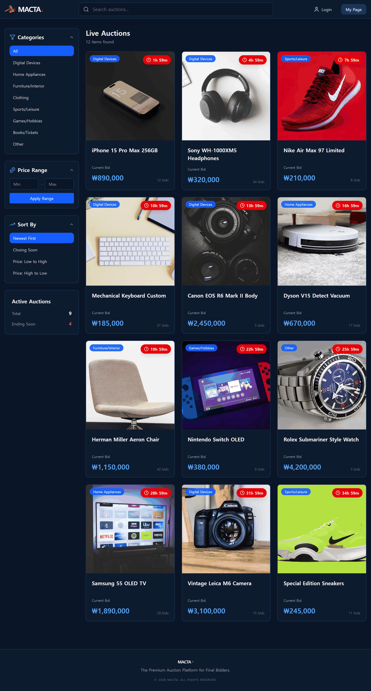

- 플랫폼
- Web
- 개발기간
- 2주
- 개발인원
- 6명
- 담당역할
-
- AWS 인프라(Terraform · VPC · EKS · ALB · WAF) (기여도 80%) , Kubernetes Manifest · Argo CD GitOps (기여도 80%)
- GitHub Actions CI/CD · ECR 이미지 배포 연동 (기여도 70%) , README · Built With 문서화 (기여도 90%)
마감 직전에도 흔들리지 않는 실시간 경매
경매 마감이 다가올수록 입찰이 한꺼번에 몰리고,
동시성 문제와 비정상 트래픽에 그대로 노출되기 쉽다.
그래서 낙관적 락·WAF·Kubernetes 운영을 묶어,
트래픽이 몰려도 안정적으로 동작하는 실시간 경매 플랫폼을 만들었다.
- 동시성 제어 낙관적 락 입찰
- 보안 ALB + WAF 차단
- 운영 EKS · Rolling Update
개발 환경
언어
프레임워크
데이터베이스
인프라
빌드
라이브러리